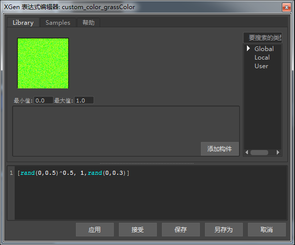

使用样条线创建草
本教程介绍如何使用 XGen 样条线非常快速轻松地创建一片草坪。我们还会使用一些表达式来控制草的行为和外观。
本教程分为以下章节：
创建草
弯曲草
使用表达式随机更改草的颜色
使用表达式更改长度
创建草
- 创建一个高度和宽度细分数均为 20 的多边形平面。这样我们就能够雕刻平面，为草创建各种基底。将该平面在 X 和 Z 方向上放大到 10 左右。
- 选择该多边形平面，然后转到“XGen > 创建描述”(XGen > Create Description)。此操作将打开下面的“创建 XGen 描述”(Create XGen Description)。
- 选择“样条线(用于长发、藤蔓等)”(Splines (use for long hair, vines, etc))。保留其他默认设置不变，然后单击“创建”(Create)。
- 建议先降低“预览/输出”(Preview/Output)选项卡中的“百分比”(Percent)值，然后再继续操作。如果“百分比”(Percent)的值过高，您可能会发现计算机会因生成大量的基本体而停止运行。
- 将“密度”(Density)增大到 5000 左右，让草覆盖平面。将“宽度”(Width)降低到 0.05 左右，使草变得更细。将样条线的“长度”(Length)增大到 2。将“锥化”(Taper)调整为 0.5，将“锥形起点”(Taper Start)调整为 0.5，使样条线看起来更像草叶。
- 将一个 standard_surface 着色器指定给 XGen 描述。将“基础颜色”(Base Color)更改为绿色。创建一个 skydome_light 并渲染场景。
具有 XGen 草样条线的平面（平面底下放置了带渐变的立方体）。
弯曲草
我们可以使用表达式沿随机方向弯曲草，而不是沿一个方向整齐弯曲草。弯曲 U 和 V 可控制样条线在对应 CV 上的弯曲程度。0 表示没有弯曲，而 1.0 表示 90 度弯曲。
单击“弯曲 U [0]”(Bend U[0])和“弯曲 V[0]”(Bend V[0])旁边的表达式图标，然后在“XGen 表达式编辑器”(XGen Expression Editor)中输入以下文本：
$a=rand(-1.5,1.5);#-2.0,2.0 $a 草样条线应随机呈弯曲状：
现在，草看起来还是有些整齐。我们可以使用“弯曲参数[0]” (Bend Param[0]) 添加更多的变化。此属性控制样条线从哪个位置开始弯曲。值的范围介于 0.0（样条线底端）到 1.0（样条线尖端）之间。
- 单击“弯曲参数[0]” (Bend Param[0])旁边的表达式图标，然后在“XGen 表达式编辑器”(XGen Expression Editor)中输入以下文本：
$a=rand(0.2,0.9);#0.0,1.0 $a 草的弯曲看起来更加随机，这得益于“弯曲参数[0]”(Bend Param[0])
使用表达式随机更改草的颜色
我们可以使用 XGen 的表达式和 Ai 用户数据颜色节点来随机更改草的色调。
- 创建一个 Ai 用户数据颜色节点，并将其连接到指定给草 XGen 描述的标准曲面着色器的“颜色”(Color)属性。
Ai 用户数据颜色节点连接到 standard_surface 着色器的“颜色”(Color)属性
- 在 Ai 用户数据颜色节点的“颜色属性名称”(Color Attr Name)中键入 grassColor。我们将在 XGen 描述中使用相同的“grassColor”名称。

将名称“grassColor”添加到 Ai 用户数据颜色节点中的“颜色属性名称”(Color Attr Name)
- 单击 XGen 中的“预览/输出”(Priview/Output)选项卡，并打开“输出设置”(Output Settings)。您应该会在下方看到“自定义着色器参数”(Custom Shader Parameters)。在“名称”(Name)文本字段中，键入用于Ai 用户数据颜色节点的“颜色属性名称”(Color Attr Name)的相同名称。在本例中，我们使用单词“grassColor”。单击“浮点”(float)并将其更改为“颜色”(Color)，因为这是我们想要更改的属性。
- 单击新定义的 grassColor 颜色属性旁边的表达式图标 ，然后输入以下表达式：
[rand(0,0.5)^0.5, 1,rand(0,0.3)] 
- 渲染场景。您应该会看到草的绿色色调着色现在呈随机状。
使用表达式更改长度
现在，我们还可以使用表达式随机改变草的长度。
- 单击“长度”(Length)属性旁边的表达式图标，然后输入以下表达式：
$a=rand(0.5,1.0);#0.05,5.0 $a 草应类似下图：
- 最后，将“密度”(Density)增大到 10000，就可以完成渲染了。可尝试为草着色器添加一些背面照明（启用 standard_surface.thin_walled 并使用 SSS ）和镜面反射度，以获得更逼真的效果。
感谢 Pedro Fernando Gómez 在 XGen 方面提供的帮助。